> hola, soy Thiago▊
> desarrollador web & software de 16 años.
> sencillez ante todo.
Me llamo Thiago, tengo 16 años y me considero un apasionado de entender cómo funcionan las
cosas.
Desde chico que me interesé por todo este increible mundo y desde hace 6 años aprendo
por mi cuenta y en la escuela. Desarrollé todo tipo de proyectos y prototipos.
Tambien interactué con muchas áreas tales como la electrónica (Arduino y electrónica básica),
desarrollo de videojuegos (GameMaker), software (apps de terminal y con interfaz gráficas),
páginas webs, y actualmente me encuentro aprendiendo ciberseguridad y Linux como hobby.
Considero que soy una persona muy práctica, que no se complica, intenta resolver rápidamente
apelando a la teoría para encontrar la solución a cualquier problema que se me presente eficientemente.
Investigo y aprendo muchísimo de forma autodidacta, lanzándome a crear proyectos nuevos que me
aporten a mi conocimiento y sobre todo sean verdaderamente útiles e interesantes.
Es mi motivación para crear software de todo tipo.
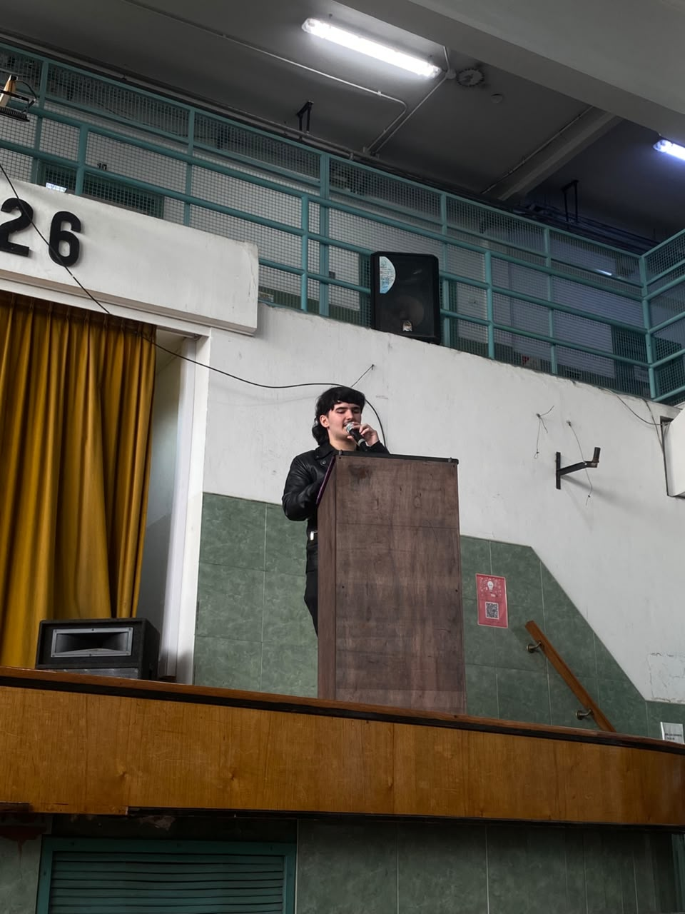
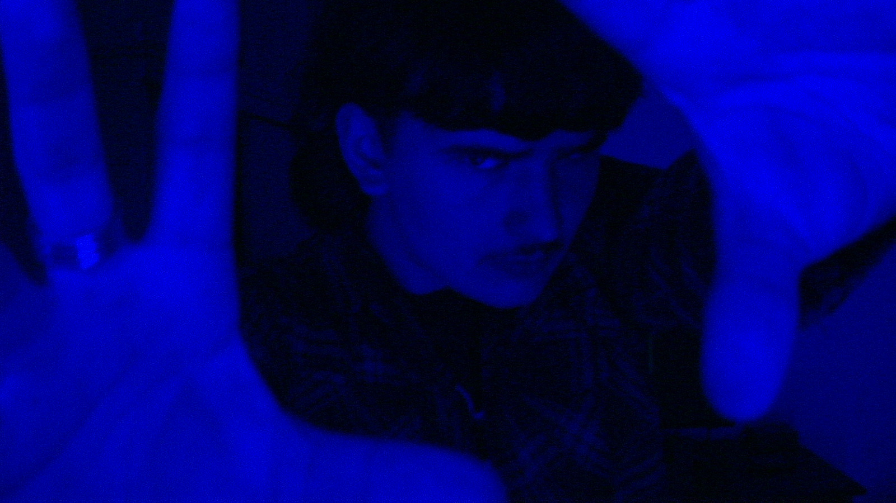
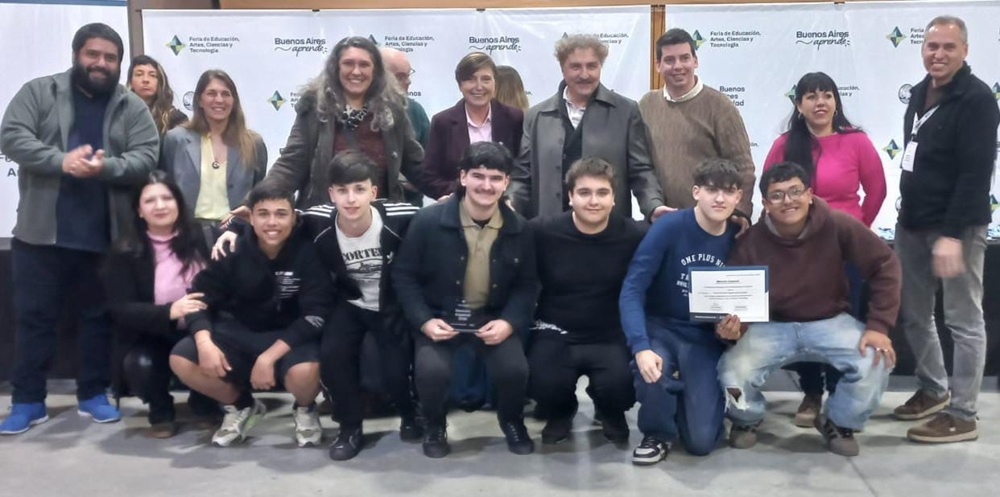
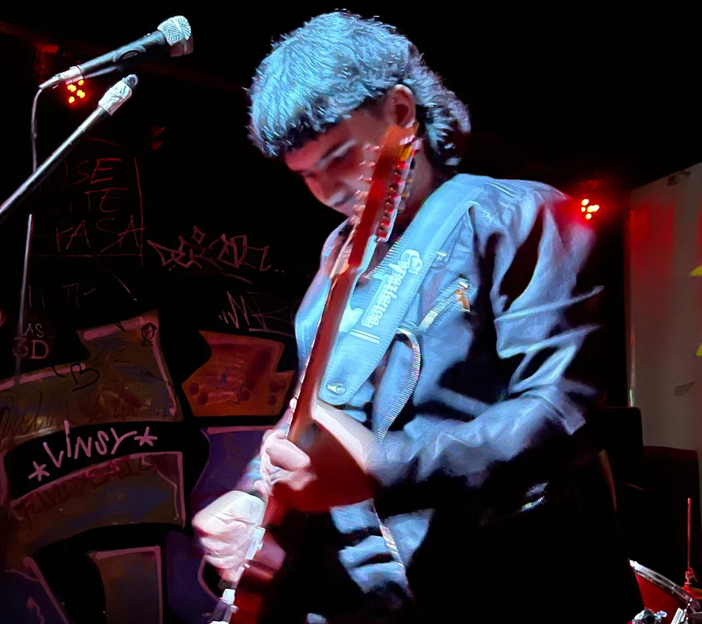
Tambien, soy un gran apasionado por la música. Colecciono formato físico, toco guitarra y otros instrumentos. Encuentro la forma
de relacionar mis hobbies con mi pasión principal que es la informática cada vez que puedo. Amante del
café, futuro barista si es que puedo. Tengo una banda y de vez en cuando hago presentaciones por diversión.
Disfruto crear proyectos con amigos cercanos.
Actualmente estoy enfocado en aprender Ciberseguridad y Redes por mí cuenta hasta poder estudiar esa rama formalmente,
deseándo desempeñarme en esa área en un futuro.
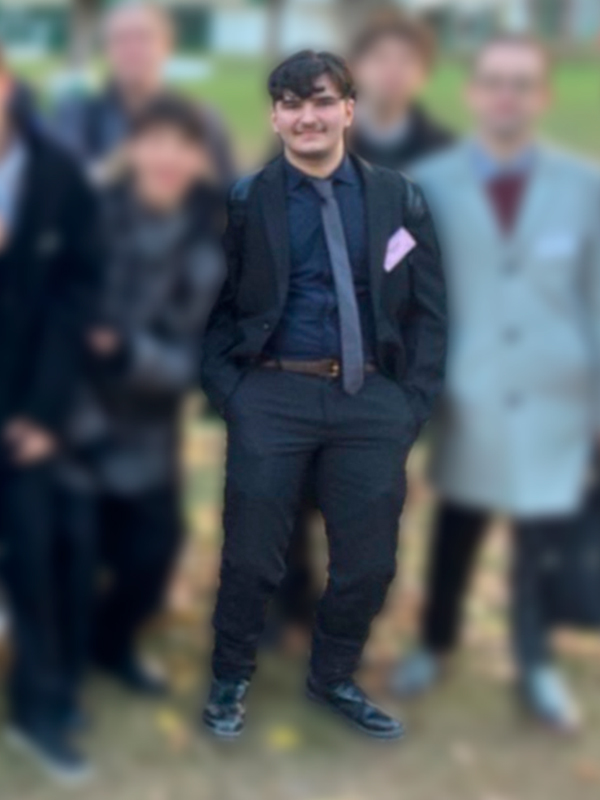
Estas son mis habilidades, las cuales continúo reforzando y aprendiendo más de ellas todo el tiempo.
Un pequeño sitio web de reseñas de discos que se actualiza periódicamente ofreciendo nuevos artículos y un interesante rincón para descubrir música nueva.
esto fue un capricho personal; crear un sitio donde compartir música activamente fue algo con lo que soñé por mucho tiempo. aprendí mucho CSS para dejar todo prolijo y estético.
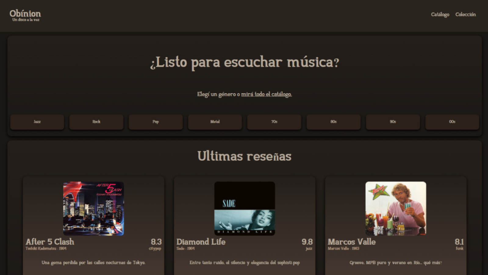
Radio por Internet autohospedada en tiempo real desarrollada, que cuenta con un reproductor web personalizado y un flujo automatizado de transmisión de audio.
muy orgulloso de esto; aprendí a gestionar servidores Linux, hacer un frontend bonito, escalar el proyecto con nuevas funcionalidades, y sé que funciona las 24/7 sin problemas. fue muy interesante crearlo.
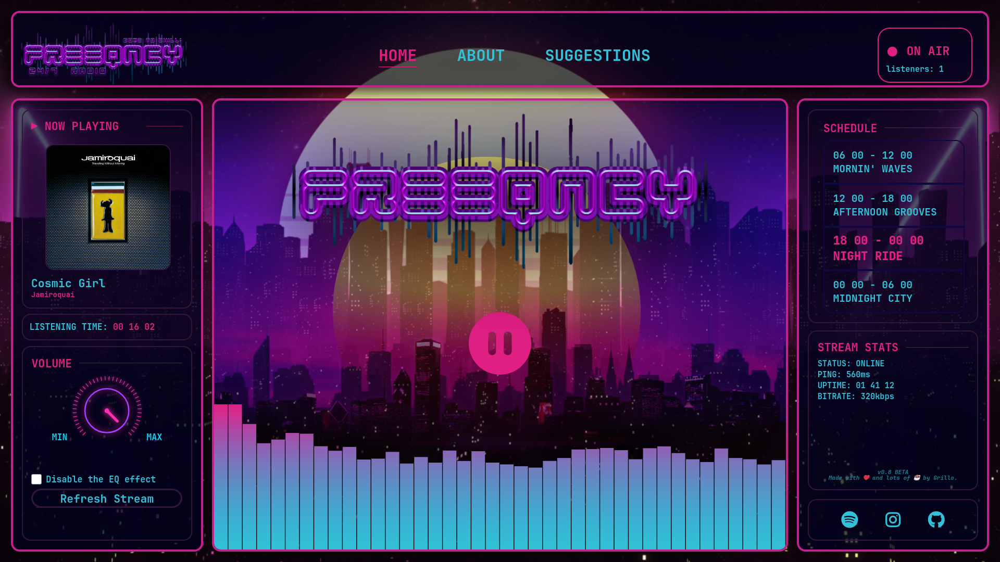
Proyecto de investigación el cual busca proponer una nueva forma de transmitir información a través de un diodo LED y/o diodo LED RGB.
proyecto ganador de una "Mención Especial" en la "Feria de Educación, Artes, Ciencias y Tecnología 2026", organizada por Buenos Aires Ciudad.
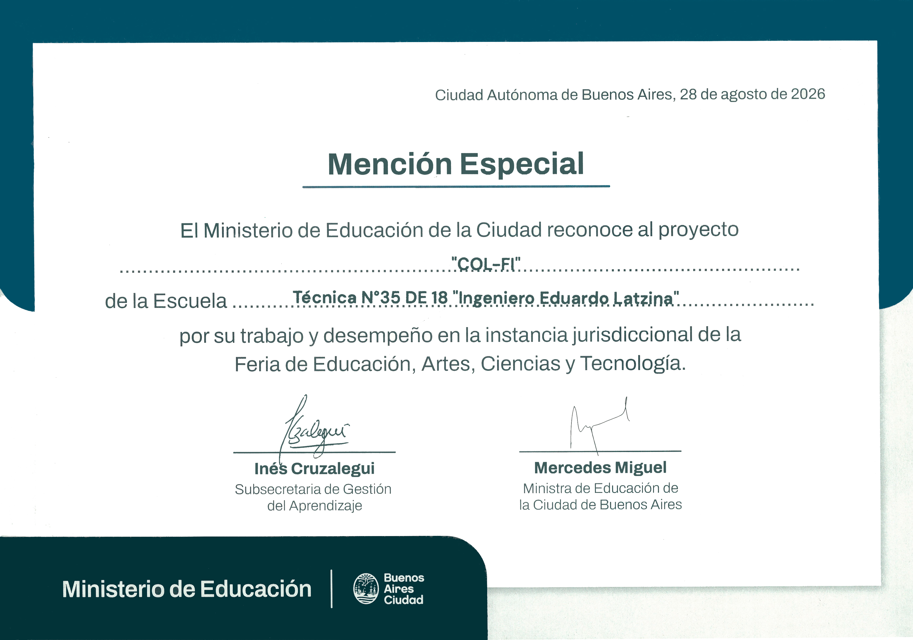
cricket es una interfaz gráfica de escritorio de código abierto, para la gestión de listas de correo electrónico y el envío masivo de correos electrónicos.
en este proyecto aprendí a gestionar emails, a enviarlos, a usar el protocolo SMTP, crear una interfaz gráfica eficiente, manipular archivos como bases de datos. si bien le faltan muchas funcionalidades interesantes, es perfectamente funcional.
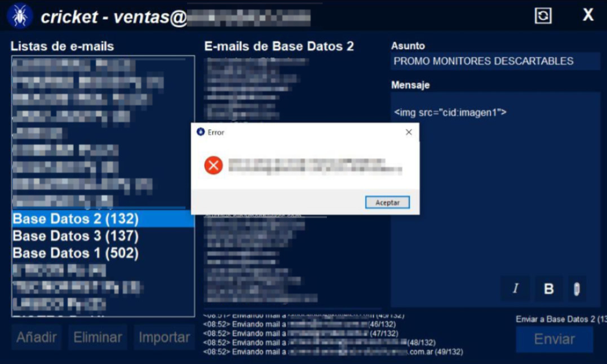
Un sencillo editor/tester de CSS online en base a cuatro elementos que forman una cara, para pura diversión y/o prueba de propiedades sencillas.
aprendí cómo insertar código CSS desde JavaScript y a su vez mucho de este lenguaje, fue un proyecto divertido de desarrollar.
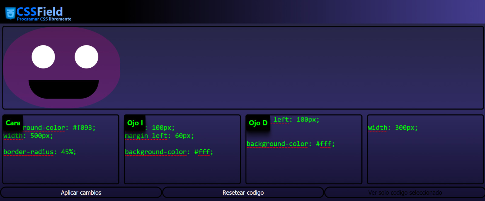
Reproductor web de videos de YouTube sin anuncios y directo, con funciones sencillas de reproducción, sin necesidad de cuentas o autenticaciones.
lo hice a los 12 años, la idea es insertar videos según el enlace que uno introduzca, fue de mis primeros contactos con JavaScript.
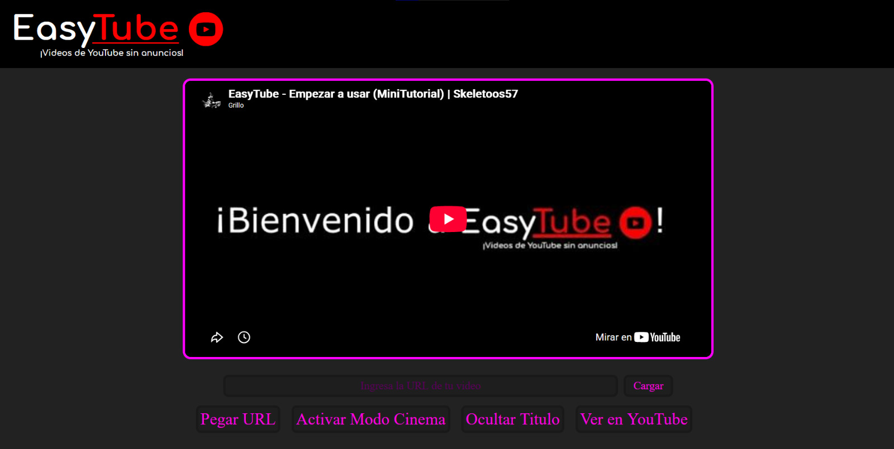
¿Querés hablar conmigo?
enviar mensaje